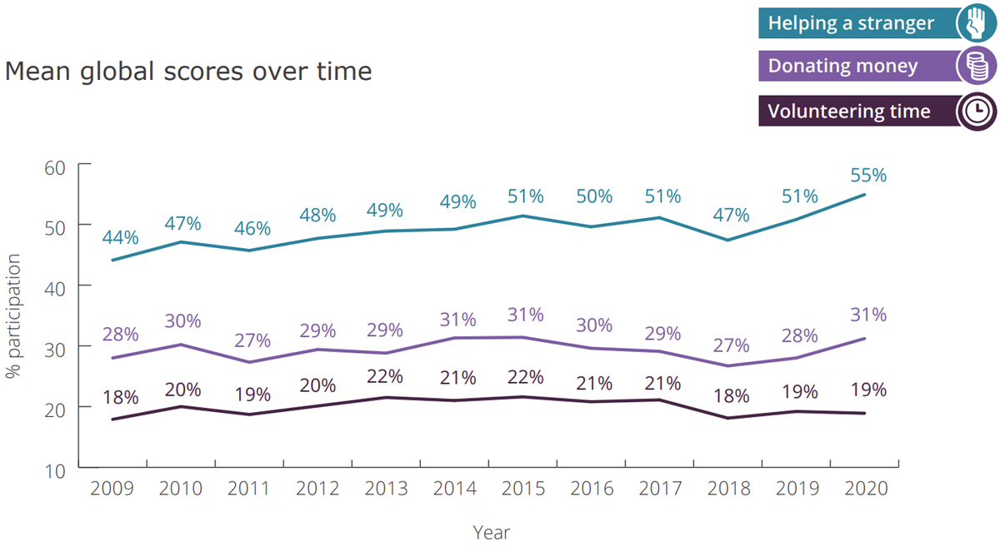
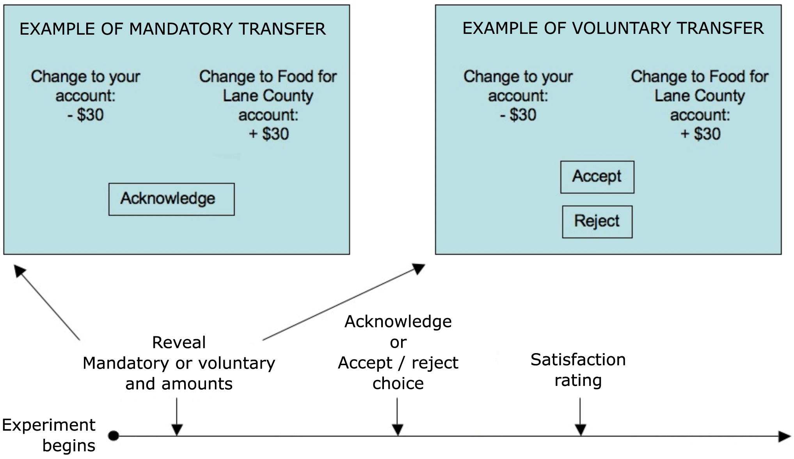
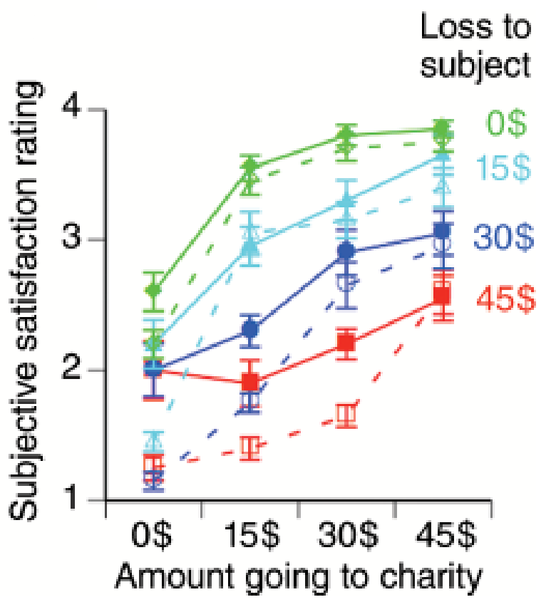
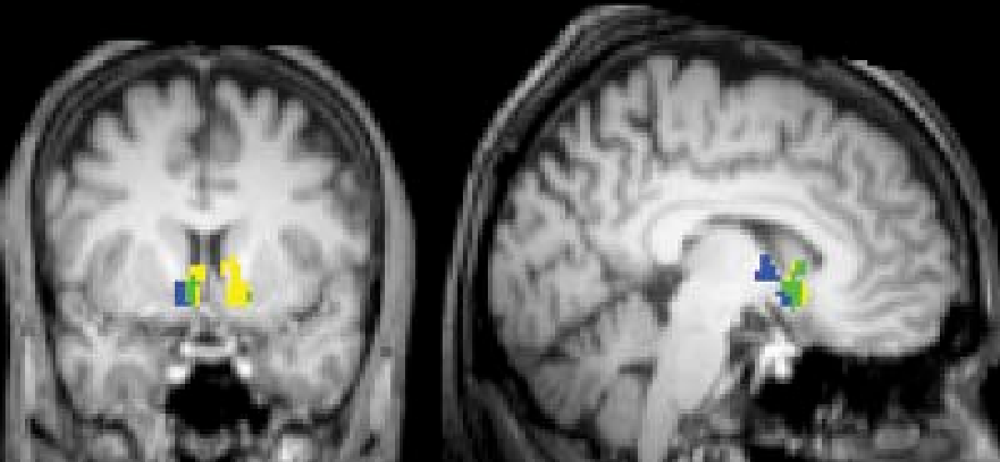
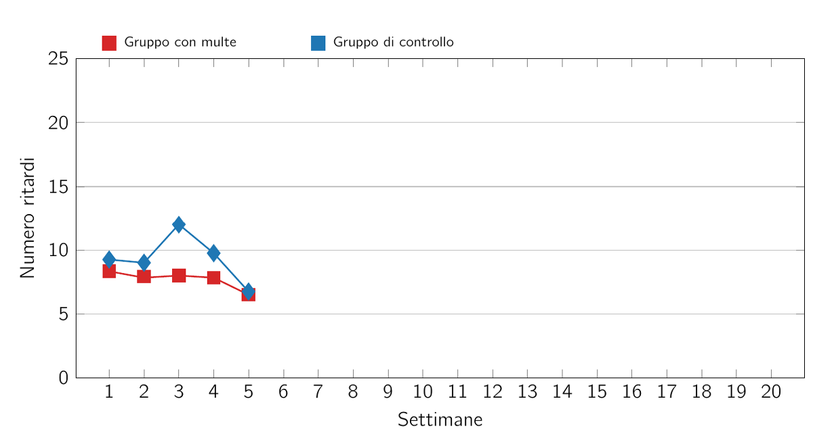
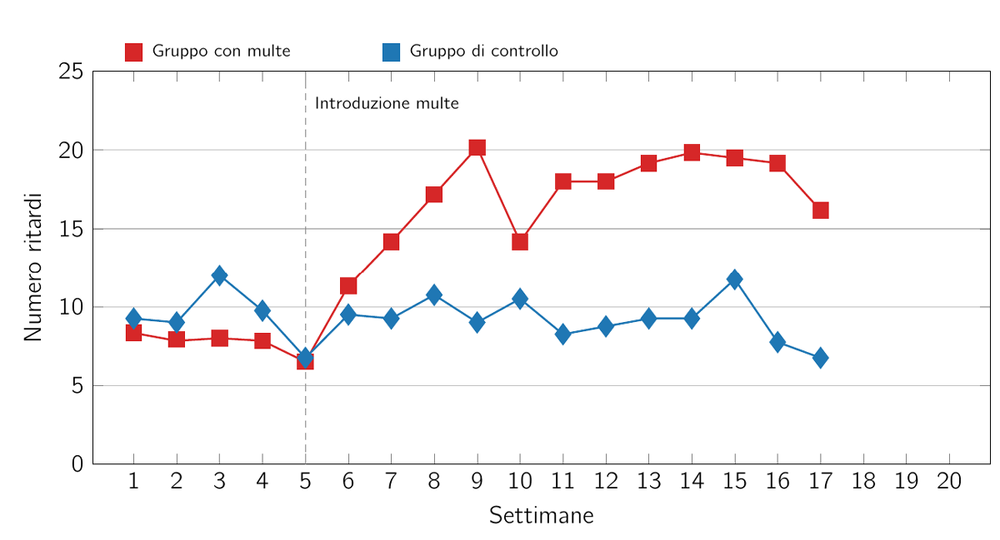
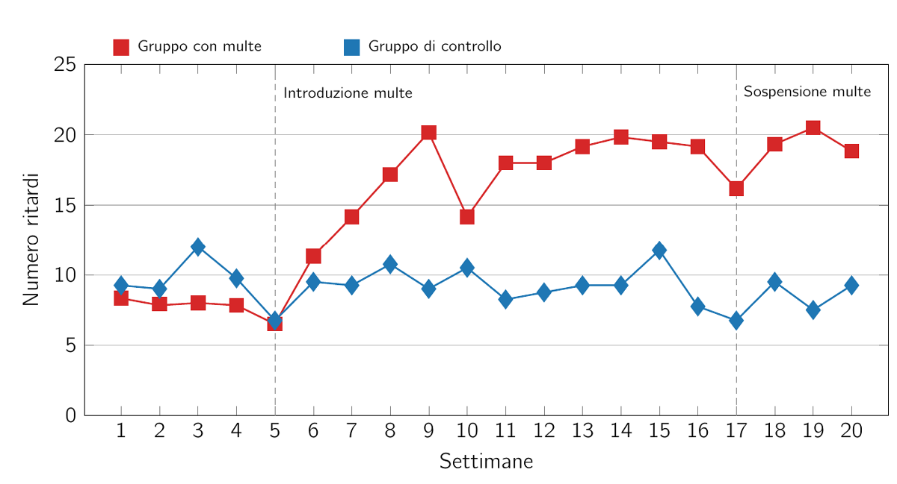

Fondamenti di Economia Comportamentale
#5
novembre 2024
Cominciamo con un esperimentino
- Per accedere, puoi alternativamente:
- Andare su https://classex.uni-passau.de
- Scansionare il codice QR qui sotto

Istruzioni
Sarete divisi in modo casuale in coppie. Per tutta la durata dell’esperimento non saprete chi è l’altro membro della coppia. L’esperimento prevede un solo turno decisionale.
Ruoli: allocatore (), ricevente ().
All’inizio dell’esperimento, riceverà una dotazione di 10 Euro.
deve scegliere quanto di questi 10 Euro vuole trasferire a . Può trasferire l’intera somma, parte di essa, oppure non trasferire nulla.
Instructions (cont’d)
non deve prendere alcuna decisione, ma deve provare a indovinare la decisione di (ossia quanto ha scelto di trasferire).
La comunicazione tra partecipanti è vietata.
Prendi l’esperimento seriamente! Una coppia di studenti ( ) sarà selezionata casualmente e remunerata sulla base della scelta di .
Partenza
Istituto: LUISS Guido Carli
Corso: Behavioral Economics and Consumer Decision Making II
Tipo di account: participant
Password: bucatini55
Domanda per gli allocatori
Domanda: quanto hai trasferito al ricevente? Quale ragionamento ha motivato la tua scelta?
Per rispondere puoi alternativamente:
- Andare su www.slido.com e inserire il codice
3444 399. - Scansionare il codice QR qui sotto.
- Andare su www.slido.com e inserire il codice
Domanda per gli allocatori (cont)
Il gioco del dittatore
Il gioco a cui hai appena preso parte è noto come gioco del ditattore (Kahneman, Knetsch, e Thaler 1986).
È pensato per studiare le decisioni in situazioni nelle quali vi è una tensione tra l’interesse individuale e l’eguaglianza.
- Pensi che, in media, le persone si comportino come te in questo tipo di situazioni?
- Ad esempio, quanto pensi che il tuo comportamento differisca da quello di un criminale in carcere?
- Birkeland et al. (2014) hanno condotto un esperimento per rispondere a questa domanda.
Il gioco del dittatore: evidenza sperimentale
Per leggere l’articolo, clicca QUI.
- Cosa abbiamo imparato dai giochi del dittatore e dei beni pubblici?
- [Molte persone si comportano in modo altruistico, cioè sono disposte a sacrificare il proprio guadagno per aumentare quello degli altri].
- [Le persone spesso ricambiano l’azione gentile di un altro con la propria gentilezza e ricambiano l’azione scortese di un altro con una punizione].
Preferenze sociali
- Cosa abbiamo imparato dai giochi del dittatore e del bene pubblico?
- Molte persone si comportano in modo altruistico. Sono cioè disposte a sacrificare parte del proprio payoff per incrementare quello degli altri.
- Le persone spesso ricambiano la gentilezza con la gentilezza e puniscono i comportamenti giudicati ingiusti.
- Altruismo e reciprocità sono esempi di preferenze sociali.
Preferenze sociali (cont)
Preferenze sociali
Preferenze che attribuiscono un valore a ciò che accade agli altri.
- C’è una notevole eterogeneità nella tendenza a donare agli altri e a reciprocicare l’altruismo. Alcune persone si comportano in modo pro-sociale, mentre altre tendono a comportarsi da free rider.
Comportamenti altruistici: fatti stilizzati

Perché le persone donano agli altri?
La letteratura ha proposto almeno due motivazioni.
Altruismo puro: aiuto gli altri perché voglio che stiano bene.
Un altruista puro è motivato unicamente dal benessere degli altri e non risponde in alcun modo al proprio interesse.
- Ciò che importa è unicamente l’effetto finale della donazione sulla persona che riceve l’aiuto.
Perché le persone donano agli altri? (cont)
- Altruismo impuro (Andreoni 1990): aiuto gli altri perché…
- Traggo piacere e soddisfazione personale dal mio prodigarmi per fare del bene (warm glow).
- Temo che comportandomi diversamente potrei andare incontro a disapprovazione sociale.
- Un altruista impuro potrebbe donare di più se il proprio comportamento è osservabile pubblicamente.
- Questo perché donare può essere un modo per segnalare qualcosa di buono su di sé.
Perché le persone donano agli altri?
Supponiamo che stiate valutando se finanziare o meno la costruzione di una biblioteca pubblica.
Se siete altruisti puri, donate denaro e godete della consapevolezza che la biblioteca sarà costruita.
Se siete altruisti impuri, donate denaro e godete della consapevolezza di aver donato al progetto.
- Forse ciò che vi fa piacere è vedere una targa con il vostro nome scritto sopra, che dichiara pubblicamente il bene che avete fatto per la comunità.
L’altruismo puro e quello impuro non sono mutualmente esclusivi.
Perché le persone donano? Evidenza sperimentale
- Per indagare il ruolo dell’altruismo puro e impuro in contesti di beneficenza, Harbaugh, Mayr, e Burghart (2007) hanno eseguito una risonanza magnetica funzionale (fMRI) su persone intente a giocare a un gioco del dittatore modificato.
Perché le persone donano? Evidenza sperimentale (cont)
Ciascun partecipante ha ricevuto 100$.
A parte dei partecipanti è stata data la possibilità di scegliere se donare parte di questa somma a un banco alimentare locale.
Agli altri partecipanti è stato effettuato un prelievo forzoso sulla dotazione individuale, simile a un’imposta sul reddito. La somma è poi stata trasferita al banco alimentare.
Perché le persone donano? Evidenza sperimentale (cont)

Perché le persone donano? Evidenza sperimentale (cont)
- Se le persone fossero spinte esclusivamente da altruismo impuro, allora…
- Dovrebbero trarre soddisfazione dal donare volontariamente.
- Non dovrebbero trarre soddisfazione da trasferimenti obbligatori (cioè non volontari).
Perché le persone donano? Evidenza sperimentale (cont)
- Se le persone fossero spinte da altruismo puro, allora…
- Dovrebbero trarre soddisfazione anche dai trasferimenti obbligatori.
- Questo perché agli altruisti puri interessa solo la quantità di denaro che il banco alimentare riceve, e non il processo con cui avviene il trasferimento.
Perché le persone donano? Evidenza sperimentale (cont)

- La soddisfazione…
- Cresce al crescere dei trasferimenti verso il banco alimentare e al decrescere delle perdite in cui si incorre.
- È maggiore nei trattamenti con trasferimento volontario (linee solide) che in quelli con trasferimento forzoso (linee tratteggiate).
Perché le persone donano? Evidenza sperimentale (cont)

- Risposta neurale nello striato ventrale per payoff ricevuti forzosamente dal soggetto (giallo), dal banco alimentare (blu) e da entrambi (verde).
- Lo striato ventrale è un’area del cervello che si attiva con la ricezione di ricompense.
Perché le persone donano? Evidenza sperimentale (cont)
Coerentemente con l’altruismo puro, i trasferimenti obbligatori a un ente di beneficenza inducono sentimenti di soddisfazione e attivano l’attività neurale nelle aree legate all’elaborazione delle ricompense.
Coerentemente con il warm glow, la soddisfazione e l’attività neurale aumentano ulteriormente quando le persone effettuano trasferimenti volontari.
L’altruismo puro e l’altruismo impuro svolgono entrambi un ruolo nelle attività di beneficeenza.
Una storia di asili
Le preferenze sociali possono essere molto sensibili al contesto in cui le decisioni vengono prese. Vediamo un esempio.
Succede spesso che i genitori fatichino per andare a prendere i figli all’asilo in orario.
A volte arrivano in ritardo, costringendo gli insegnanti a lavorare più tempo del dovuto.
Cosa fareste per scoraggiare i genitori dal fare tardi?
Una storia di asili (cont)
Gneezy e Rustichini (2000) hanno condotto un esperimento sul campo ad Haifa, introducendo multe per il ritardo dei genitori in alcuni asili nido, ma non in altri (questi ultimi sono stati utilizzati come gruppo di controllo).
Sulla porta degli asili del gruppo di trattamento è stato affisso il seguente cartello:
ALL’ATTENZIONE DEI GENITORI
Dati i ritardi di alcuni genitori, abbiamo deciso (con l’approvazione dell’Autorità per gli asili privati di Israele) di multare i genitori che arriveranno a prendere i loro bambini in ritardo. A partire da domenica prossima verrà applicatauna multa di 10 NIS [circa 3 euro] ogni volta che un bambino verrà ritirato dopo le 16.10.
Una storia di asili (cont)
- Numero di ritardi prima dell’introduzione delle multe: 
Pensi che la politica delle multe abbia avuto effetto? Perché?
- Per rispondere (in modo anonimo) puoi alternativamente:
- Go to www.slido.com and enter the code
3024 829. - Scansionare il codice QR qui sotto.
- Go to www.slido.com and enter the code
Pensi che la politica delle multe abbia avuto effetto? Perché? (cont)
Una storia di asili (cont)
- Numero di ritardi dopo l’introduzione delle multe: 
Una storia di asili (cont)
I genitori nel gruppo di trattamento hanno risposto alle multe raddoppiando la frequenza dei ritardi!
Dopo dodici settimane, il sistema delle multe è stato eliminato.
Cosa pensi sia successo?
- Nulla. La tendenza dei genitori ad arrivare in ritardo è rimasta invariata rispetto alle settimane precedenti.
Una storia di asili (cont)
- Numero di ritardi dopo la sospensione delle multe: 
Una storia di asili (cont)
Perché introdurre le multe ha avuto un effetto contrario a quello previsto?
Possibile spiegazione:
- Prima dell’introduzione delle multe, la maggior parte dei genitori arrivava puntuale rispondendo all’obbligo morale di non far rimanere il personale dell’asilo oltre il dovuto.
- In altre parole, i genitori provavano un senso di altruismo nei confronti del personale.
- L’introduzione delle multe ha segnalato che il ritardo aveva un prezzo e poteva quindi essere acquistato, proprio come la verdura o le scarpe.
Una storia di asili (cont)
- Possibile spiegazione (cont):
- L’attribuzione di un prezzo al ritardo, come se lo si mettesse in vendita, sembra aver minato il senso di obbligo etico dei genitori di evitare di disturbare gli insegnanti.
- L’incentivo ha trasmesso un messaggio sbagliato: “va bene essere in ritardo purché si paghi”.
Lo spiazzamento delle preferenze sociali
L’esperimento suggerisce che a volte le persone agiscono in modo più auto-interessato in presenza di incentivi materiali (ad esempio, il prezzo del ritardo) che in loro assenza.
Quando le multe e i prezzi hanno questi effetti indesiderati, diciamo che le preferenze sociali vengono spiazzate da incentivi che fanno appello all’interesse materiale.
Questo effetto di spiazzamento è persistente: nel nostro esmpio, i genitori hanno continuato ad andare a prendere i figli in ritardo anche dopo che le multe sono state eliminate.
Lo spiazzamento delle preferenze sociali (cont)
Lo spiazzamento delle preferenze sociali è una prerogativa degli adulti? Sembrerebbe di no.
Warneken e Tomasello (2008) hanno condotto un esperimento con un campione di bambini di due anni.
In assenza di ricompense, i bambini si sforzano di aiutare un adulto a recuperare un oggetto fuori portata.
In presenza di una ricompensa materiale (un giocattolo) per aver aiutato l’adulto, il tasso di aiuto si riduce del 40 percento.
Concetti chiave
- Prima di procedere, prenditi un momento per assicurarti di aver compreso questi concetti:
- Gioco del dittatore
- Preferenze sociali
- Altruismo puro
- Altruismo impuro
- Spiazzamento delle preferenze sociali